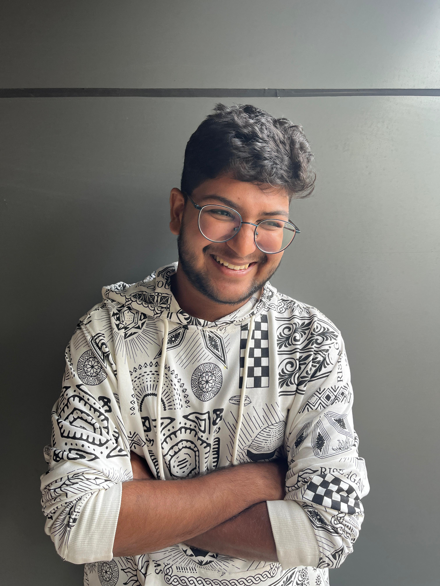

<!DOCTYPE html>
<html lang="en">
<head>
    <meta charset="UTF-8">
    <meta name="viewport" content="width=device-width, initial-scale=1.0">
    <title>About</title>
    <style>

     body {
  background: url("about.jpg") no-repeat center center fixed;
  background-size: cover;
  position: relative;
  color: whitesmoke;
  font-family: 'Inter', sans-serif;
  line-height: 1.6;
  padding: 20px;
}

.ab_heading {
  padding-left: 20px;
  text-align: center;
  color: #ffe4b5;
  font-family: 'Times New Roman', Times, serif;
  font-weight: bold;
  font-size: 50px;
}

.intro {
  text-align: center;
  font-size: 40px;
}

.desc {
  text-align: left;
  font-weight: 500;
  font-size: 20px;
  color: whitesmoke;
  padding: 10px;
}

.flex-container {
  display: flex;
  align-items: center;
  justify-content: space-between;
  flex-wrap: wrap;
}

/* Image styling */
.flex-container img {
  max-width: 100%;
  height: auto;
  border-radius: 20px;
}

/* Footer styling */
footer {
  text-align: center;
  color: black;
  margin-top: 100px;
}

/* ----------------- RESPONSIVE CHANGES ----------------- */
@media (max-width: 768px) {
  .ab_heading {
    font-size: 36px;
  }

  .intro {
    font-size: 24px;
  }

  .desc {
    font-size: 16px;
    text-align: justify;
  }

  .flex-container {
    flex-direction: column;
    align-items: center;
  }

  .flex-container > div {
    padding: 10px;
  }

  footer {
    margin-top: 60px;
  }
}

     
</head>

<body>
  <header>
  
  <h1 class="ab_heading">About Me:</h1>

  </header>
  <main>
    
 <div class="flex-container">

      <div style="flex: 1; padding: 20px;">

    <h2 class="intro">Hello, I am Piush Praharaj.</h2>
    <p class="desc">Hello! 👋 I’m Piush Praharaj.
      I’m a third-year Electronics and Communication Engineering (ECE) student at Silicon University, with a passion for combining technology and creativity to build impactful digital solutions.
      
      From designing sleek, responsive websites to exploring the depths of VLSI design and IoT applications, I love working at the intersection of hardware and software. Over the past few years, I've honed my skills in areas like:
      
      <ul>
        <li>Web Development — crafting modern front-end experiences with HTML, CSS, JavaScript, and React.</li>
      
        <li>VLSI Design — understanding digital logic, circuit simulation, and hardware implementation. </li>
      
        <li>IoT and Embedded Systems — building connected devices and automating real-world processes.</li>
      
        <li>Cybersecurity — exploring the fundamentals of Identity and Access Management (IAM), system security, and data protection.</li>

      </ul>
      
     Apart form all the technical stuff, you will find me Quizzing or debating over different genres of information. Alongside that, I am very fond pf Photography, Writing, Designing and Gossiping around.
      
      
     </p>
    </div>
    <div>
      <div style="flex: 1; padding: 20px;">
        
    </div>
  </div>
</main>

<footer>
    <p>© 2025 Piush Praharaj | Follow me on <a href="https://github.com/WhiteDemon-Dev" target="_blank">GitHub</a></p>
</footer>
</body>
</html>
